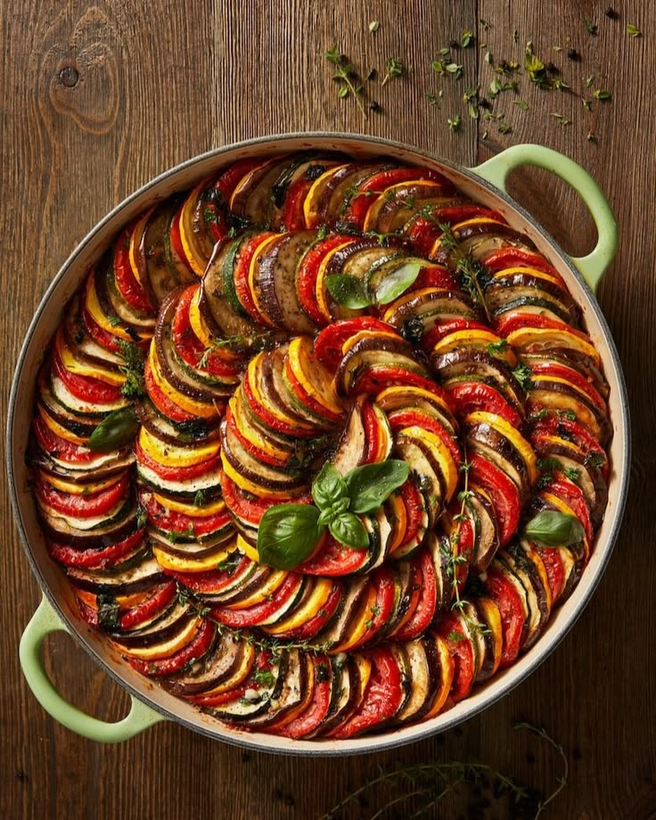

Ratatouille

Description
Ratatouille is a French stew from Provence, made with late summer vegetables like eggplant, tomatoes, peppers, and zucchini. It\'s rich with olive oil, bright with vinegar, and flecked with fresh herbs.
Ingredients
- Onion and garlic - They create the stew\'s savory base.
- Eggplant - Any variety will work, but I typically use a medium-large Italian globe eggplant here. I don\'t peel it because I like that the skins help the eggplant pieces hold their shape. But if you\'d like to, feel free.
- Zucchini - Yellow squash is great too!
- Peppers - Any type of sweet pepper will work here. I typically use yellow, orange, or red bell peppers. Avoid green bell peppers—they won\'t add enough sweetness to the ratatouille.
- Tomatoes - They break down into a sauce that brings the other vegetables together. Only use chopped fresh tomatoes in this recipe. Canned diced tomatoes or crushed tomatoes will overpower the other veggies.
- White wine vinegar - It makes the ratatouille tangy and bright. If you don\'t have it on hand, red wine vinegar, sherry vinegar, and fresh lemon juice are all good substitutes.
- Extra-virgin olive oil - For sautéing the veggies. You\'ll add 1 to 3 tablespoons of oil to the pan at a time so that each vegetable becomes nicely caramelized and tender.
- A pinch of sugar - It tames the acidity of the vinegar and tomatoes.
- Red pepper flakes - For heat. Feel free to skip them if you\'re sensitive to spice.
- Fresh herbs - Basil and thyme add fresh, aromatic flavor to this recipe.
- salt and pepper - To make all the flavors pop!
Steps
- Start by prepping the eggplant. Chop it into 1/2-inch pieces. Then, place it in a colander and sprinkle it with salt. Set it over a plate or bowl or in the sink to drain for 20 minutes.
- Then, cook the eggplant. Blot it dry and sauté it in a large skillet until tender, 10 to 15 minutes. Remove it from the pan and set aside.
- Next, cook the zucchini. When it\'s tender (but not mushy!), remove it from the pan and set aside with the eggplant.
- Then, cook the peppers and onions until very tender, stirring in the garlic halfway through.
- Once the onions, bell peppers, and garlic are tender, add the tomatoes, along with the red pepper flakes and sugar. Cook until they break down into a sauce, 8 to 10 minutes.
- Finally, simmer the ratatouille. Return the eggplant and zucchini to the pan. Add the vinegar, thyme, salt, and pepper and cook until the ratatouille is thick.
- Stir in half the basil and season to taste. Garnish with more basil and serve!
Back to Homepage